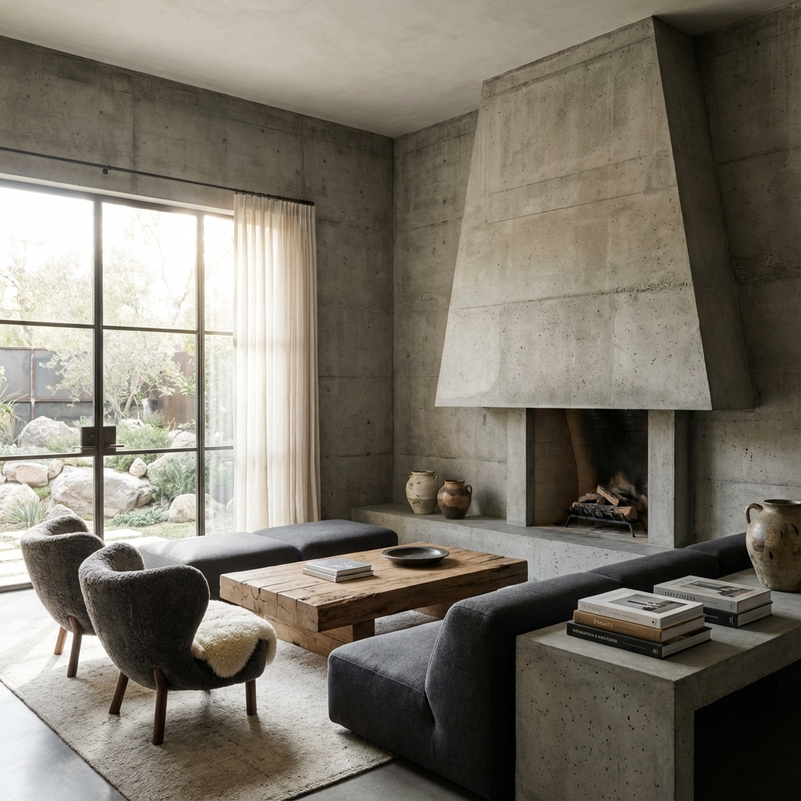
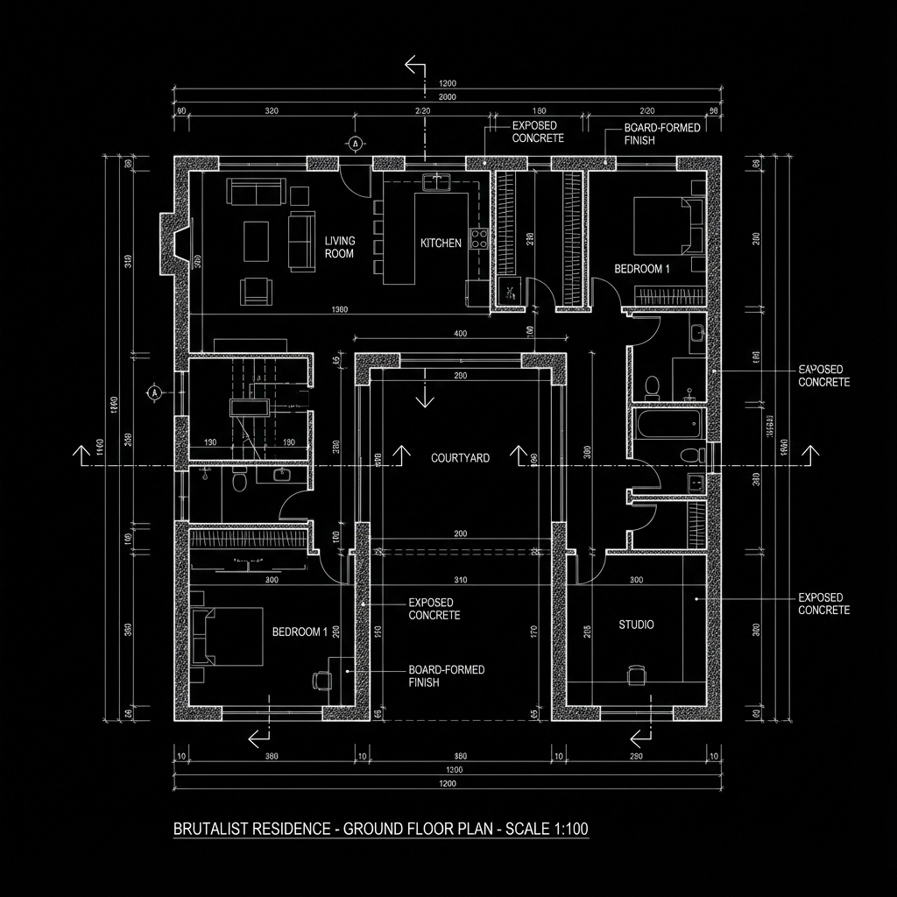

Year
2024
Client
Private Residence
Area
450 m²
Status
Completed
Concept
The Concrete House is an exploration of solidity and permanence. Nestled within a dense forest, the structure acts as a monolithic sanctuary, buffering the inhabitants from the damp cold while framing specific views of the wilderness. The raw concrete facade will weather over time, allowing the building to become part of the forest itself.
Inside, the harsh exterior gives way to a surprisingly warm interior, characterized by soft lighting, timber accents, and large apertures that invite the changing seasons into the daily life of the residents.

Interior Living Space

Ground Floor Plan